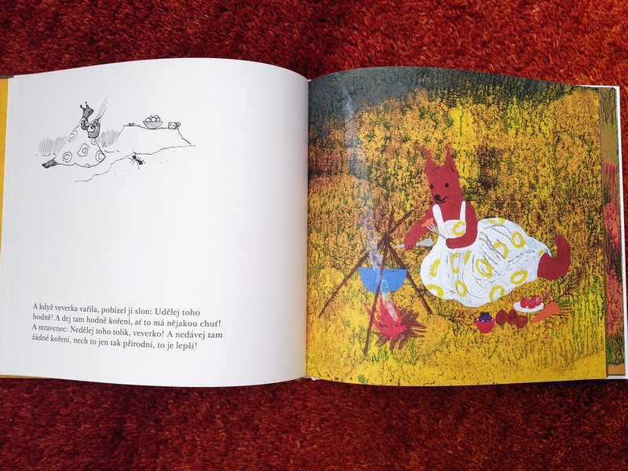
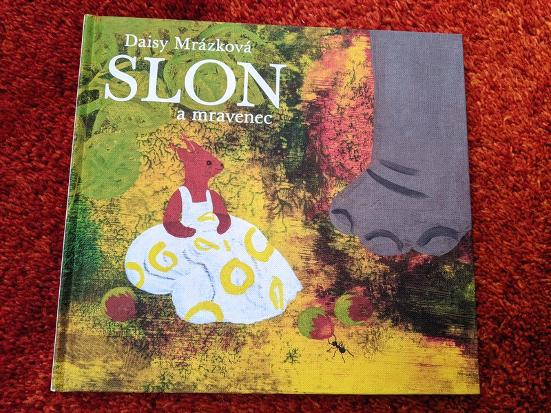

Po dlouhé době jsem se rozhodla vybrat nějakou hezkou novou knížku pro Olíka. Od té doby, co pravidelně navštěvujeme knihovnu, už mu knihy kupuju jen velice výjimečně. Tuto jsme dostali v rámci spolupráce s knihkupectvím Megaknihy.cz, a protože Vánoce tu budou coby dup, nechám mu ji nejspíš až pod stromeček. Pokud to tedy do té doby vydržím, protože je opravdu moc krásná :-)…
Od Daisy Mrázkové jsme v minulosti četli knížku Můj medvěd Flóra, kterou jsme si s Olim okamžitě zamilovali. Byla jsem si jistá, že ani s ostatními knihami od autorky nešlápneme vedle. Daisy Mrázková má svůj nezaměnitelný styl, v němž se prolíná lyrika s epikou, a půvabné a neotřelé ilustrace, které ke svým knihám sama vytvořila, dodávají dětským příběhům neopakovatelné kouzlo.
V pohádce Slon a mravenec sledujeme společnou domácnost tří zvířátek - slona, veverky a mravence - a peripetie, které jejich vzájemné soužití přináší. Pro slona je všechno moc malé, pro mravence zase moc velké a komplikované. Pouze pro veverku je všechno “tak akorát” a celé dny se snaží hledat cesty, jak svým kamarádům vyhovět. Dokud jednoho dne neunese veverku z jejich domečku v jeskyni cizí lovec…

Slon a mravenec je vlastně vyprávěním o takové běžné rodině, v níž každý má svoje vlastní potřeby a preference. O neustálém hledání balancu, aby byli všichni její členové pokud možno spokojení. O tom, že každý jsme rozdílní, ale i přesto k sobě můžeme zkoušet hledat cestu a mít se rádi.
Kniha mne příjemně překvapila svým velkým formátem - Můj medvěd Flóra, kterého jsme měli půjčeného z knihovny, byl velikosti mnohem menší. Na velkém formátu samozřejmě lépe vyniknou půvabné ilustrace, díky kterým je i pro dospělého radost knihou listovat.

Celkově jsem zpracováním i poselstvím příběhu nadšená. Myslím, že je to ta pravá knížka pod stromeček a jsem si jistá, že i Oli si ji zamiluje.